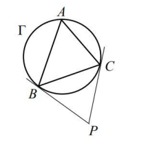

單選 1
兩切線夾角與 \(\sin A\)
答案 E
\(P\) 在 \(\triangle ABC\) 外接圓外，\(PB,PC\) 皆為切線，\(\angle BPC=\theta\)。求 \(\sin A\)。

解題步驟
- 兩條切線形成的外角與圓心角互補：\(\angle BPC=180^\circ-\angle BOC\)。
- 所以 \(\angle BOC=180^\circ-\theta\)。
- \(A=\angle BAC\) 是對同一段弧 \(BC\) 的圓周角，因此 \(A=\frac12\angle BOC=90^\circ-\frac{\theta}{2}\)。
- \(\sin A=\sin(90^\circ-\frac{\theta}{2})=\cos\frac{\theta}{2}\)。
關鍵：看到「兩切線」先想到「切線夾角 = 180° − 對應圓心角」。